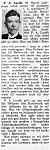

Per August (P.A.) Gustafsson Lund
Fjärdingsman i Bastuträsk, Norsjö sn 1910-20, speditör. Blev 87 år.
| Född: | 1872-07-26 Persliden, Norsjö fs, Norsjö sn. [1] |
|---|
| Levde Bonde: | 1900 Kattisträsk, Norsjö fs, Norsjö sn. [2] |
|---|
| Död: | 1960-06-21 Brännheden 1:5, Bastuträsk kbfd, Norsjö kn. [3] |
|---|
| Vigsel: | 1905-04-15 Kattisträsk 2, Liden, Norsjö fs, Norsjö sn. [4] |
|---|
| Omflyttad till: | 1910 Bastuträsk, Nosjö fs, Norsajö sn. [5] |
|---|
Personhistoria
| Årtal | Ålder | Händelse |
|---|
| 1872 |
|
Födelse 1872-07-26 Persliden, Norsjö fs, Norsjö sn [1] |
| 1881 |
9 år |
Makan Ida Kristina Hällgren föds 1881-10-13 Kattisträsk, Norsjö fs, Norsjö sn [6] |
| 1893 |
21 år |
Modern Kristina Elisabet (Stina Lisa) Larsdotter dör 1893-12-15 Persliden, Norsjö fs, Norsjö sn [7] |
| 1900 |
|
Levde Bonde 1900 Kattisträsk, Norsjö fs, Norsjö sn [2] |
| 1901 |
28 år |
Fadern Gustaf Reinhold Mattsson Lund dör 1901-05-29 Persliden, Norsjö fs, Norsjö sn [8] |
| 1905 |
32 år |
Vigsel Ida Kristina Hällgren 1905-04-15 Kattisträsk 2, Liden, Norsjö fs, Norsjö sn [4] |
| 1910 |
|
Omflyttad till Ida Kristina Hällgren 1910 Bastuträsk, Nosjö fs, Norsajö sn [5] |
| 1910 |
38 år |
Dottern Helga Hallly Mariana Lund föds 1910-08-12 Norsjö fs, Norsjö sn [9] |
| 1954 |
82 år |
Makan Ida Kristina Hällgren dör 1954-09-16 Brännheden 1:5, Bastuträsk kbfd, Norsjö kn [3] |
| 1960 |
87 år |
Död 1960-06-21 Brännheden 1:5, Bastuträsk kbfd, Norsjö kn [3] |
Källor
| [1] | Norsjö (AC) C:3 (1853-1878) Bild 83 / sid 160, AI:7 (1872-1881) fol. 302 |
| |
| | |
| [2] | Norsjö AI:9B (1892-1899) fol. 150 |
| |
| | |
| [3] | DB, PA / DOR 52-60 |
| |
| | |
| [4] | Norsjö (AC) AIIa:4 (1900-1912) Bild 670 / sid 57 |
| |
| | |
| [5] | Norsjö (AC) AIIa:4 (1900-1912) Bild 430 / sid 33 |
| |
| | |
| [6] | Norsjö AI:8 (1882-1891) fol. 349 |
| |
| | |
| [7] | Norsjö AI:9B (1892-1899) fol. 171 |
| |
| | |
| [8] | DB, FS, HFL |
| |
| | |
| [9] | Mtl Västerbottens län 1971 |
| |
|
|  |
| 1960-06-23. Norra Västerbotten |
| |
|
| 1960-06-24. Norra Västerbotten |
|
{kind=link}
{kind=link}